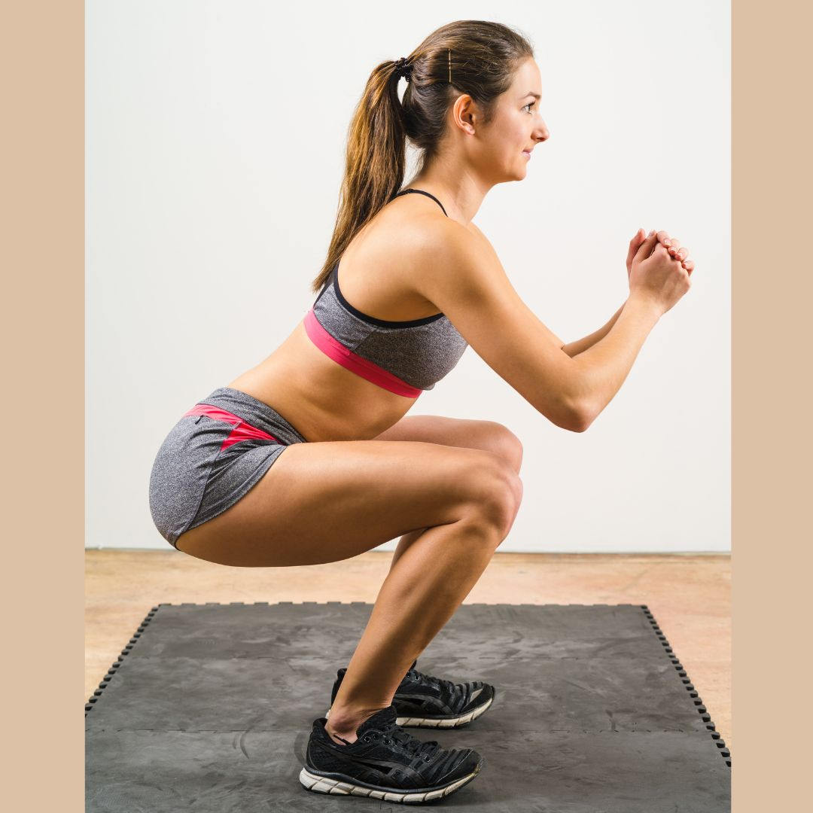

Workouts
A quick 10 minute workout

10 minute workout:
Warm-up:
- Start by doing some dynamic stretches for about 2 minutes to get your body prepared for the work out.
• Include shoulder rolls, lunges, squats, and side bends.
Workout:
- Now let’s get started by doing a series of strength-building exercises.
• Do a one-minute plank, followed by 10 squats and 10 push-ups. Repeat this three times.
- Now it’s time to do some cardio:
• Jumping jacks for one minute, followed by high knees for one minute. Repeat this three times.
Core work:
- Let’s finish with some core-strengthening exercises.
• Do two rounds of crunches and side planks (30 seconds per side).
- Now finish with 60 seconds of seated leg lifts or mountain climbers.
Cool-down and stretching:
- Take a few minutes to stretch, focusing on the main muscles used throughout the work out.
- Once you’ve stretched, finish with some breathing exercises to help your body relax.
- Congratulations! You now completed a 10-minute home workout!
Click here to go back to top